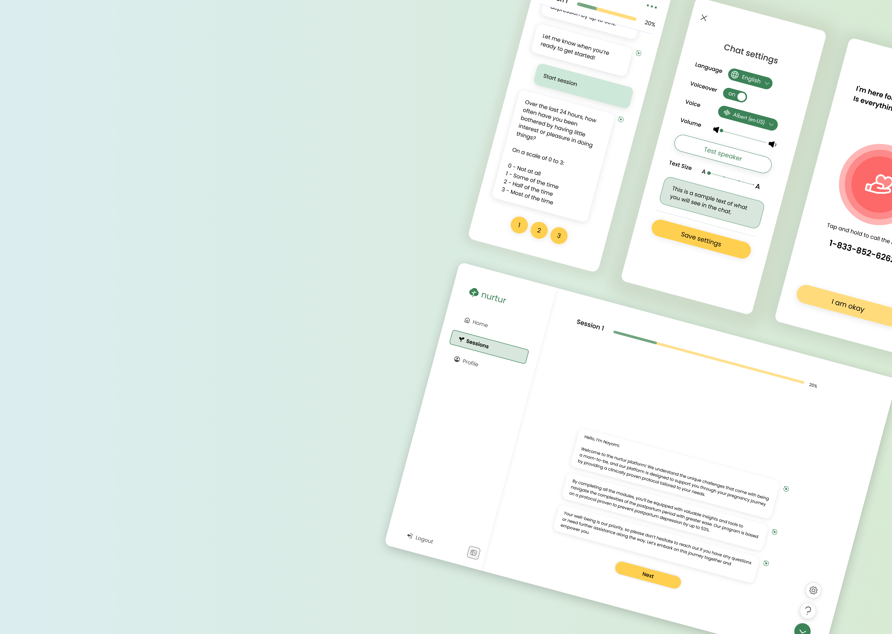
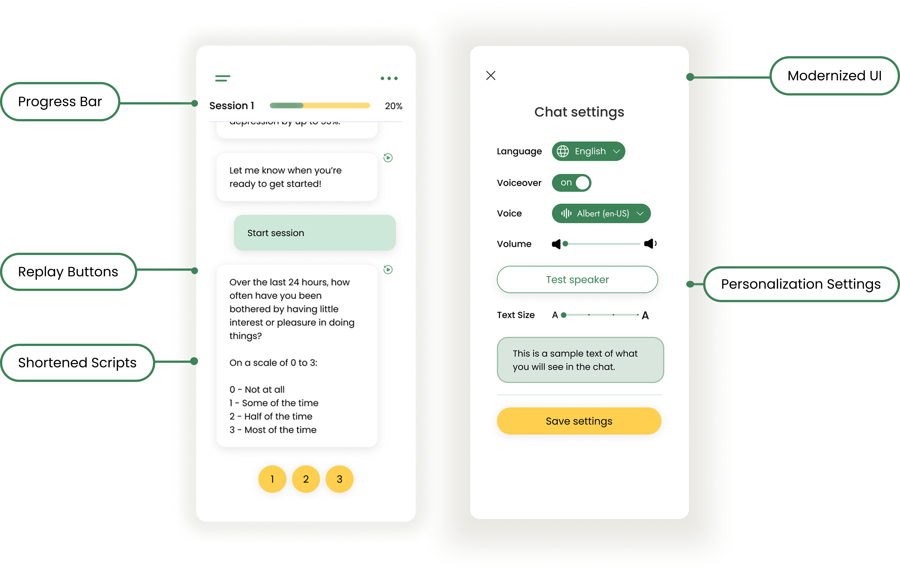
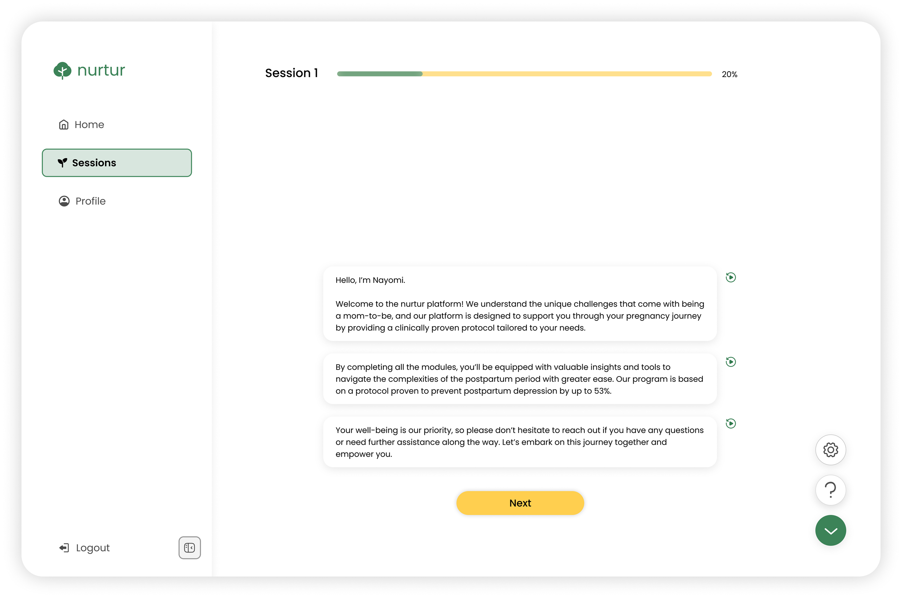
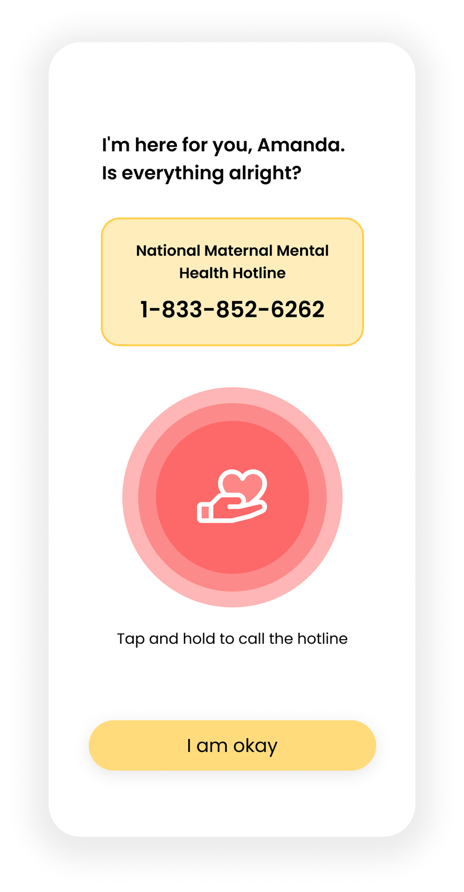
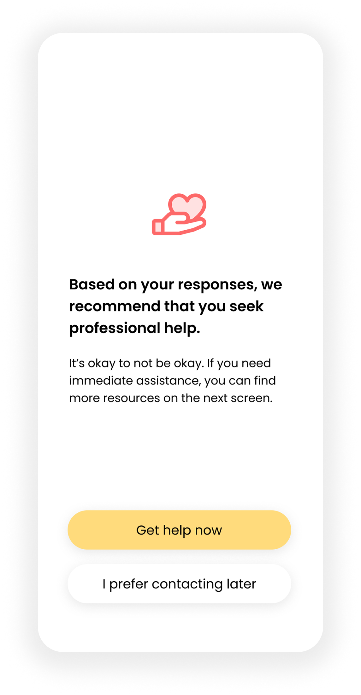
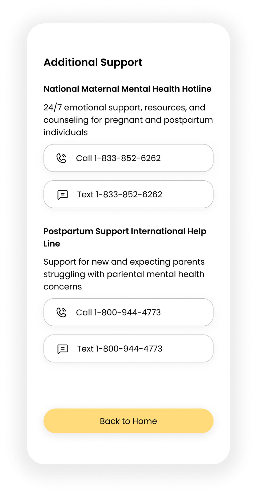

Lina Wang
Lina Wang
Immediate Response
Ensure users can access assistance at the first moment they need it.

UI/UX Designer
Jiayu Wang
2 Project Managers
1 week
Interaction Design, User Flow, Wireframing, Rapid Prototyping
nurtur is a mobile application designed to support new mothers and their care network by providing mental health support before, during, and after their pregnancy to minimize risks in postpartum depression. The app focuses on mental health awareness and prevention through mental health education sessions and professional resources.
Key features include chatbot sessions, mental health wellness tracking capabilities, and access to mental health resources, enabling users to receive timely psychological support during this critical life transition.
How Might We design a comprehensive digital platform that empowers pregnant women and new mothers to proactively manage their mental health while providing their support networks with the tools and resources needed to offer meaningful assistance during this critical life transition?


When designing mental health products, we cannot only consider ordinary days—we must also prepare for the most difficult moments when users feel completely overwhelmed and broken down. It is precisely in these moments, when reaching out for help seems incredibly difficult yet is most necessary, that our built-in crisis hotline feature becomes a lifeline for users, ensuring they can access professional support directly when they need it most.
Ensure users can access assistance at the first moment they need it.
When users are not ready to accept help, clearly provide pathways for them to independently access support later.
All interaction designs include room for correction, allowing users to still receive help even after mis-operations during vulnerable states.

A home page that tracks all upcoming and saved events.
Easily accessible event info and QR codes for check-in, with suggested events at the bottom.
“During panic, a single obvious action beats many choices.”

Additional hotlines are presented with both call and text options.
A Back to Home action allows users to exit when ready.

Additional hotlines are presented with both call and text options.
A Back to Home action allows users to exit when ready.
Since the clinicians are actively involved in the process, there needs to be a dashboard that centralize all the resources and allow clinicians to view the stat’s of their patients at a glance.